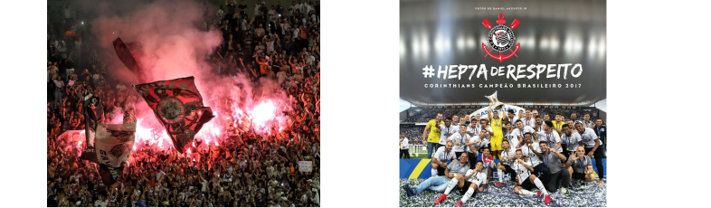

.png)
Bem-Vindo ao Hospício!
O Club Corinthians Paulista, mais conhecido simplesmente como Corinthians, é uma das instituições esportivas mais emblemáticas e apaixonantes do Brasil. Fundado em 1º de setembro de 1910, na cidade de São Paulo, o clube carrega uma história rica e uma legião de torcedores fervorosos, que o acompanham com devoção em cada jogo, seja nos estádios ou através das telas.
O Corinthians transcende o futebol para muitos de seus admiradores, representando não apenas um time, mas uma verdadeira identidade cultural. Sua torcida, conhecida como "Fiel", é reconhecida mundialmente pela paixão, lealdade e apoio inabalável, independentemente das circunstâncias.
Nos gramados, o Corinthians construiu uma trajetória marcada por momentos memoráveis e conquistas significativas. O clube já ergueu inúmeros troféus, incluindo o Campeonato Brasileiro, a Copa Libertadores da América e o Mundial de Clubes da FIFA. Cada vitória é celebrada com uma intensidade única, unindo milhões de corações em uma só emoção.
Além do sucesso dentro de campo, o Corinthians também desempenha um papel importante na sociedade, promovendo projetos sociais, incentivando a inclusão e participando ativamente do desenvolvimento comunitário. Seu compromisso vai além das quatro linhas, inspirando gerações e deixando um legado que ultrapassa os limites do esporte.

O hino do Corinthians ecoa como um hino de resistência e determinação, representando a força de um povo que nunca desiste. Cada partida é uma batalha, e a Fiel está sempre presente, apoiando e empurrando o time rumo à vitória.
Assim, o Corinthians não é apenas um clube de futebol; é uma paixão que une pessoas de todas as origens, idades e classes sociais. É uma história de luta, superação e glória, que continua a ser escrita a cada jogo, a cada gol, a cada vitória. O Corinthians não é apenas um time; é uma parte inseparável da identidade brasileira, uma fonte inesgotável de orgulho e inspiração para milhões ao redor do mundo.